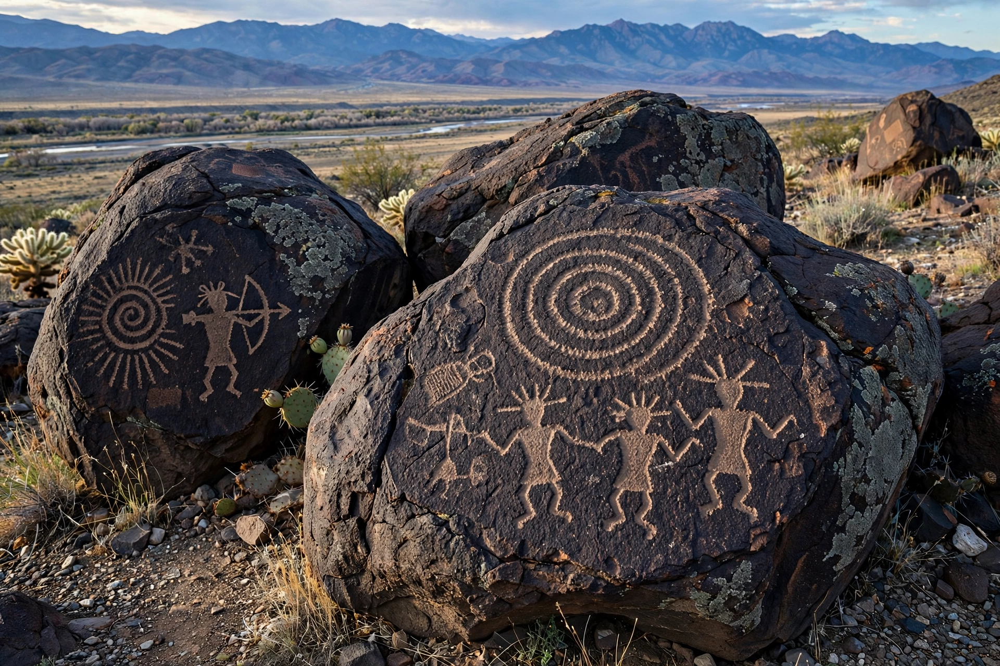

From Wikipedia, the free encyclopedia
| Petroglyph National Monument | |
|---|---|
| Location | Albuquerque, New Mexico, United States |
| Area | About 7,236 acres (2,928 ha) |
| Established | 27 June 1990 |
| Managed by | National Park Service and City of Albuquerque |
| Features | ~24,000 petroglyphs; five volcanic cones |
Petroglyph National Monument stretches along Albuquerque's West Mesa, a volcanic escarpment rising above the Rio Grande in New Mexico. The monument protects one of the largest petroglyph sites in North America: an estimated 24,000 images pecked into dark basalt boulders by Ancestral Pueblo peoples, and later by Spanish settlers, between roughly 400 and 700 years ago and into the historic period.
Ancestral Pueblo artists chipped through the desert varnish of the basalt to expose the lighter rock beneath, depicting human figures, animals, birds, spirals, masks, and Katsina-like beings whose meanings are tied to Pueblo religious and cultural life; the site remains sacred to modern Pueblo peoples. Spanish colonists added crosses, initials, brands, and Christian symbols from the 1600s onward. The three main viewing areas are Boca Negra Canyon, Rinconada Canyon, and Piedras Marcadas Canyon.
The escarpment formed about 150,000 years ago when lava from fissures west of the city spread and cooled; five small cinder cones in the monument's western portion mark the vents. The dark, varnished boulders along the mesa edge provided the canvas for the carvings.
Threatened by Albuquerque's westward expansion, the site was protected after years of local advocacy and was authorised as a national monument on 27 June 1990, co-managed by the National Park Service and the City of Albuquerque — an unusual partnership, with much of the land owned by the city.
Petroglyph · Albuquerque · Pueblo peoples · Pictish stones
